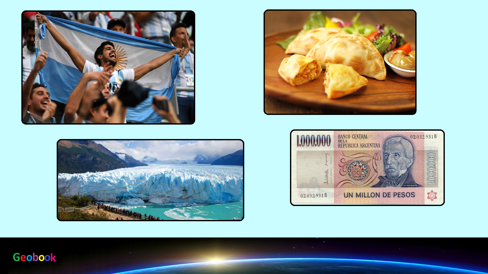

____
Климат
Средняя температура летом (июль) в северных районах составляет +28 С, в центре около +24 С и на юге +10 С. Зимой (январь) соответственно +18 С, +15 С и +1 С. Осадков выпадает от 100-300 мм в год в равнинных районах запада страны, до 1400-1600 мм на северо-востоке и на горных склонах. Аргентина отличается весьма разнообразными климатическими условиями. Север страны, включая широты расположенные на тропике Козерога и ниже, характеризуется жарким и влажным летом, а также умеренными, сухими зимами. Зимой также периодически случаются засухи. В Центральной Аргентине лето жаркое с частыми торнадо и грозами, зимы холодные. Для южных регионов характерно тёплое лето и холодные зимы с обильными снегопадами, особенно в горных районах. На возвышенностях во всех поясах условия более суровы. Самые высокие и самые низкие показатели температуры в Южной Америке были зафиксированы именно в Аргентине. Самая высокая температура 47,3°C была отмечена в Кампо Галло (провинция Сантьяго-дель-Эстеро) 16 октября 1936 года. Самая низкая температура −40°C отмечалась (провинции Сан-Хуан) 8 июля 1966 года.
____
